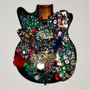

Quick Takes (April 2017)
After the overwhelming stream of records Carl and I received in March, the month of April was much, much calmer for the two of us. That doesn't mean that we had a lot of ground to cover, but we both felt like we were able to write about what we needed to without leaving anything out.
From my side, I was pleasantly surprised with Feit's terrific new effort, Pleasure, though I must admit I've never been a staunch follower of her past work. Carl really enjoyed Pinky Pinky's debut EP, which convinces me that he's the one who should move to Los Angeles so he can feel right at home with the raffish guitar rock that continues to give character to this city. It was also a month where two college rock elder statesmen, Thurston Moore and Mark Lanegan, proved that they can still write compelling new material. And let's just say that we both weren't too keen on Incubus' crushingly weak return.
What were your favorite albums during the month of April? Anything we didn't get to review on our site that we should've? You can always reach us on facebook, or on our official twitter page. - Juan
..
 The Big Moon
The Big Moon
Love in the 4th Dimension
(Columbia)
There’s something very endearing about The Big Moon’s debut LP. In parts. the London four-piece’s brand of rock and roll manages to revive the comatose corpse of London’s golden age of indie music. In other parts, it evokes a Pixies-like knack of refining the reserved and the resounding. In addition to that, the timing of Juliette Jackson’s lyrical delivery is not too dissimilar to the way Alex Turner knows his way around a pen and paper. Listen to the lyric in Pull The Other One – "And will you stay the night? I’d like to let you stay the day but my schedule’s very tight," and you’ll see what I mean. Despite these influences bleeding from the romantic ramshackle of The Big Moon’s songs, their sound is absolutely their own. Their versatility and ability to channel some of the genuine peaks of the paradigm into their sound is a huge strength, and while it doesn’t break the mould or reinvent the wheel, Love in the 4th Dimension is a very impressive debut. [7/10] Carl Purvis
BNQT
Volume 2
(Bella Union)
We’ve reached a time when even early 2000’s indie rock is a nostalgic commodity. Though it makes this early thirty-something feel quite old, the surprising merging of BNQT, comprised of key members of Grandaddy, Travis, Franz Ferdinand, Midlake and Band of Horses, is confusing to say the least. To begin, even if all of these bands were at their prime around the same time, there’s no denying that each of these bands follow very different stylistic paths. Thankfully, the bulk of Volume 1 sounds like a coherent and unified piece. And if they’re going to follow a certain template, then it makes sense that they follow through with a sonic amalgamation of psychedelic and soft rock that is primarily borrowed from Midlake (it was Eric Pulido’s idea, after all). So it’s hard to parse the logistics behind their songwriting, but there’s a tasteful equilibrium at hand even if each member brings out their own peculiarities: Jason Lytle’s fatalistic balladry (Failing at Feeling); Fran Healy’s unabashed romanticism (Mind of a Man); Alex Kapranos’s stealthy seduction (Hey Banana); Pulido’s hippie tunefulness (Real Love). It’s a pleasant roast of surprisingly thought-out jams, carefully considered in their own indie rock permutations, even if it ultimately puts forth Midlake’s talents to the fore over anyone else’s. [6/10] Juan Edgardo Rodríguez
 Feist
Feist
Pleasure
(Polydor)
Feist strips things down dramatically on Pleasure. It’s a gusty move considering she could’ve furthered her pop aspirations even further after the deserving mainstream success of The Reminder, and even Metals to a smaller degree. But the Canadian singer/songwriter has always upheld the integrity of her art above with absolutely no compromises. Pleasure marks a sudden return after a six year absence, and instead of making any brash statements she opts to pivot even further from the rustic earthiness of Metals, but with an equally patient approach that conserves the intimacy of her folk leanings. There is more of a dominant firmness to Pleasure, though, as it carefully harnesses a raw dosage of brittle emotions without any polish or finesse. It offers these otherwise tender songs an immediacy that exposes her charismatic and involving personality with humor and perspective, even if there’s a seething fury to her pulsing electric guitar assaults. The quiet/loud dynamics of Pleasure showcase an artist who’s satiating her capricious appetite, all while keeping her listeners guessing with a knowing wink. [8/10] Juan Edgardo Rodríguez
 Incubus
Incubus
8
(Island)
Around the turn of the century, Incubus were one of the bands who really nailed mainstream alternative rock. Make Yourself and Morning View are two pretty brilliant records, while the turntable scratches and nu-metal funk of S.C.I.E.N.C.E. still sound great today. The Californians are onto their imaginatively titled 8th LP now, and in a word, it’s dreadful. In fact, it’s as dreadful as its song titles, and that is saying something. In all fairness, Brandon Boyd and Co. sound like they’re having fun on the record, and they’ve earned the right to do that. As an Incubus fan, though, it’s really hard to enjoy the 2017 version of the band. The songs are supremely safe, built around Boyd’s distinctive, spirited vocals and Mike Einziger’s crunchy, hooking riffs. There’s barely any turntable work, just vanilla rock that once you’ve heard once you’ve heard it a million times. With the exception of the die-hards, I imagine the fan base that the band built with their early work has finally lost interest with this effort. Incubus have un-made themselves. [3/10] Carl Purvis
 Mark Lanegan
Mark Lanegan
Gargoyle
(Heavenly)
Now onto his 10th solo LP, Mark Lanegan has played himself into the form of his career. Gargoyle thrusts the throbbing electronic textures and Krautrock rhythms first heard with 2012’s excellent Blues Funeral into the forefront of his soundscapes, while his tobacco-scorched baritone only seems to get better with age. The record plumbs the depths of gothic electro rock to scape a haughty grandeur that is as hopeful as it is mournful, typifying the notion that Lanegan is at the peak of his creative powers, finding the most delicate of balances between polar opposite semblances easily. His irrepressible, grizzled vocal is the master key to the soul that is often kept hidden behind the pewter façade, and it’s the desire for more glimpses into it is what makes Gargoyle as affecting as it is. For large parts of his career, Lanegan has often shared the limelight by way of guest appearances. His recent work has shown he’s at his fiercest when he’s front and centre. [8/10] Carl Purvis
 The New Year
The New Year
Snow
(Undertow)
The New Year like to take their time. Risen out of slow core pioneers Bedhead, the more affable foursome afford a nimble simplicity that has always fallen secondary to that band’s more intense atmospheric sweep. They’ve never written records with the intent to impress, as each of their previous three releases unfold with a patience that yields subtle and bare melodic moments. Snow, their latest after almost a decade of silence, could be considered their most austere. Even if does feature the occasional moment to crank their guitars, like in the rushing The Party’s Over, much of Snow follows a wintry path of languidly melancholic songs that reveal a curled-up optimism. The Kadane brothers are not ones to tarnish these graceful moments with any trimmings, just like in both Amnesia and Recent History, both of which sustain a purposeful beauty working with an economy of means. That Snow remains faithful to The New Year’s past work, and with the same timeless impact, confirms that they’ll always be welcome regardless of the absence. [7/10] Juan Edgardo Rodríguez
 Pinky Pinky
Pinky Pinky
Pinky Pinky
(Innovative Leisure)
As Juan pointed out to me earlier this week when discussing our choices for this month’s Quick Takes, I seem to have a bit of a penchant for the breezy buzz of the LA music scene. Pinky Pinky’s debut EP is the latest in a long line of exciting acts to drop off the conveyor belt, and it’s one of the releases I’ve enjoyed the most over the past month. The trio of teenagers have refined an unflappable take on a garage rock genre that, asides the efforts of the irrepressible Ty Segall, isn’t exactly in its pomp right now. Lead single and opening track Ram Jam is insatiably catchy, meshing a drifting groove with a poised vocal and a razor-sharp guitar tone in a winning effort. Hot Under the Habit bleeds a staunch coolness, with Anastasia Sanchez’s vocals tearing around another consummately cultivated arrangement. The EP oozes authenticity, and when considered that Sanchez is the veteran of the band at 19 (Isabelle Fields and Eva Chambers are just 17), Pinky Pinky are a hot prospect. [8/10] Carl Purvis
Splashh
Waiting a Lifetime
(Cinematic Music Group)
Four years have elapsed since Splashh’s infectious debut LP Comfort, but the opening few tracks of their sophomore record would slot straight into its predecessor’s track list without seeming out of place. In the time between the two releases, the Anglo-Australian five-piece threatened to deviate dramatically from the sun-soaked fuzz in favour of more experimental, synth-based electronica. For whatever reason the album – provisionally titled Honey + Salt - was aborted last year, and instead the band have dropped an album that is almost guilty of plagiarising the one before it. Honey + Salt is not entirely forgotten, with Honey + Salt the track – along with Look Down To Turn Away - acting as the glitchy, oddly sensual keystone of a record that is otherwise formulaic at best. The songs are consistently decent, even if they don’t have the edge and the energy of their Comfort sisters, but the vast majority are ultimately forgettable. [5/10] Carl Purvis
 Thurston Moore
Thurston Moore
Rock N’ Roll Consciousness
(Ecstatic Peace)
A sense of rejuvenation fills Thurston Moore on Rock N’ Roll Consciousness. Most of his latter solo work, from Demolished Thoughts to The Best Day, has taken a more electro-acoustic direction even if he’s never completely neglected his hypnotic guitar pursuits. The cool desert climate of Rock N’ Roll Consciousness is mantric and minimalist in style, a lean 5 songs that complement each other over the course of a transcendent 40 minute journey. But he still works with a varying palette of moods, from expansive stoner rock (Exalted) to agitated post-punk (Cusp), all while retaining a sonic richness that feels more like an artfully conceived sonic installation than a traditional album. There’s still a familiarity to his past work in Smoke of Dreams, where he pushes his soloing more than usual even if he holds on a rhythmic backdrop reminiscent of albums like Murray Street. Moore wails freely a tad too far for its own good, which ends with something of an anticlimactic shrug, though it also suits his current state of mind. His exercise in soul-cleansing is in full swing in Consciousness, and he’s still got a long way to go. [7/10] Juan Edgardo Rodríguez
 White Reaper
White Reaper
The World’s Best American Band
(Polyvinyl)
There's something undeniably obnoxious about naming yourself the world’s best American band. But if White Reaper are merely emulating a posture of prime superiority, well at least they’re working with a style of music that once felt invincible. The Louisville, Kentucky foursome played with a power pop sound as if fronted by Robert Pollard on their debut record White Reaper Does it Again, with a swaggering set of beer-bashing anthems that fashioned a steady balance of bubblegum pop and huge guitar hooks. They still adopt a late seventies/early eighties sound on The World’s Best American Band, except that they’re now incorporating those mammoth riffs with more of a hard rock bent. Their muddy garage sound has also cleared up with a slicker and refined production, like in the superb tracks Judy French and The Stack, and both wouldn't sound out of place if played between The Cars and Van Halen on a classic rock station. It never quite overstays its welcome during its brisk 30 minutes, though once it approaches its more redundant second half, it’s hard to make out whether they’re paying homage to their heroes or if they’re gearing up for a nostalgic tribute tour. Still, White Reaper are a smart, tough bunch who always sound like they’re having the time of their lives. And that’s something you can’t fake. [7/10] Juan Edgardo Rodríguez
15 May, 2017 - 17:53 — No Ripcord Staff